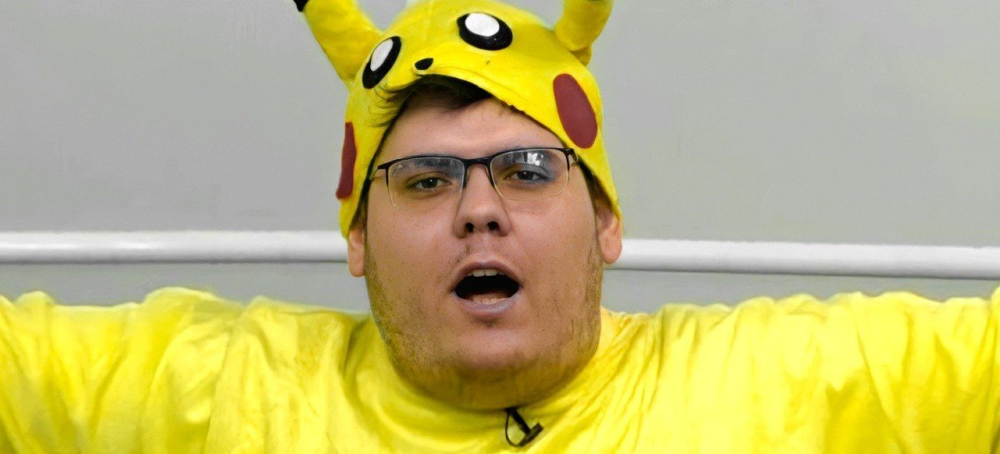

Carreira
Casimiro começou a ganhar destaque primeiramente no canal Esporte Interativo (hoje TNT Sports Brasil) apresentando o programa “EI Games”, ao mesmo tempo que participava no canal do youtube “De sola”, canal de humor de esquetes e conteúdo futebolístico que também pertence a TNT Sports. Casimiro chegou a cursar a faculdade de jornalismo, mas não chegou a terminá-la. Em janeiro de 2019, foi convidado para comentar no SBT Sports Rio junto com Pedro Certezas, para cobrir as férias dos comentaristas principais do programa.
Casimiro começou a se destacar dois anos depois, em 2021, após passar a fazer lives diárias na Twitch. Com o seu bordão "meteu essa?" (que se tornou um meme na Internet), tornou-se uma sensação ao fazer suas transmissões de um jeito descontraído, misturando futebol com humor. Com todo esse sucesso, e com o seu conteúdo peculiar, futebolístico (tema de destaque no Brasil) e engraçado, atraiu um enorme público, no qual a maioria são mais jovens, sendo considerado um dos maiores streamers e a revelação do ano, além de ter sido o quinto mais assistido do Brasil no ano.
Devido à sua ascensão em 2021, foi um dos 15 indicados para o Prêmio Comunique-se, na categoria "Jornalista Influenciador Digital", venceu o Prêmio iBest na categoria "Twitcher do Ano" e venceu o Prêmio eSports Brasil na categoria "Personalidade do Ano" (foi também indicado a categoria "Melhor Streamer do Ano", mas não ganhou nesta). Também chegou marca de 200 milhões de visualizações de seu canal de cortes no YouTube.
Em janeiro de 2022, anunciou que sairia do SBT para investir em outros projetos e no dia 22 do mesmo mês, foi anunciado que Casimiro iria transmitir 16 jogos do Campeonato Carioca em suas lives na Twitch após fechar uma parceria com a empresa LiveMode, que é responsável gerir alguns campeonatos como o Paulista e a Copa do Nordeste.
Após assistir e reagir ao primeiro episódio da série "Neymar - O Caos Perfeito" da Netflix, Casimiro conseguiu bater o recorde de espectadores simultâneos da Twitch no Brasil em 24 de janeiro de 2022, com mais de 545 mil pessoas acompanhando a transmissão, marca que o fez alcançar primeiro lugar de maiores transmissões nacionais na plataforma, além de ter entrado também no top 10 de pico de audiência na história da Twitch global, ocupando a nona colocação. Em abril de 2022, tornou-se o streamer com mais inscritos no mundo, ultrapassando 97 mil usuários. No dia 19 de maio, Casimiro foi banido da Twitch por 48 horas por violação de direitos autorais, ao transmitir os melhores momentos da Europa League. Foi desbanido após 3 horas e 27 minutos.